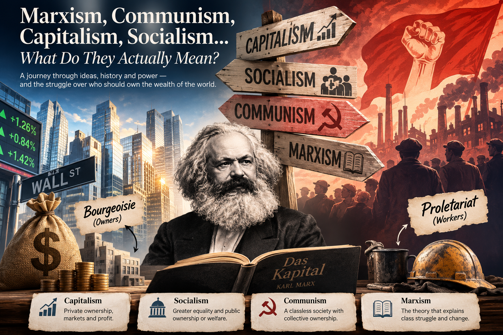

By Debolina Tapadar • Politics • History • 8 min read

If you've ever watched a political debate, scrolled through social media, or picked up a history book, you've probably encountered words like capitalism, socialism, communism, Marxism, bourgeoisie, and proletariat. They're everywhere. The problem is that they're often used interchangeably—even though they don't mean the same thing. Some people use them as insults. Others use them as praise. Many use them without fully understanding what they actually represent. This article isn't about convincing you that one system is better than another. Instead, it's about understanding what these ideas mean, where they came from, and why they continue to shape the world today.
Imagine you decide to open a bakery. You buy ovens, rent a shop, hire employees, and sell bread. If customers love your bakery, you make profits. If business slows down, you absorb the losses. That is capitalism in its simplest form. Capitalism is an economic system where individuals and private companies own businesses and resources. Prices are largely determined by supply and demand, while competition encourages innovation and efficiency. Supporters argue that capitalism rewards creativity, entrepreneurship, and hard work. It has played a major role in technological advancement and economic growth across much of the modern world. Critics point out that capitalism can also produce wealth inequality, monopolies, and situations where workers may not receive an equal share of the value they help create. Most modern economies—including India, the United States, Japan, and Germany—are primarily capitalist while still including government regulations and public services.
Now imagine that healthcare, education, electricity, and public transportation are either owned by the government or heavily regulated so that everyone can access them regardless of income. That's the basic philosophy behind socialism. Socialism doesn't necessarily eliminate private businesses. Instead, it argues that certain essential services should prioritize public welfare rather than maximizing profits. Modern socialist-inspired policies often include:
Countries such as Sweden, Norway, and Denmark are frequently cited because they combine competitive capitalist markets with extensive social welfare systems.
Communism takes the idea further. Instead of private ownership of factories, land, and major industries, communism proposes collective ownership. According to Karl Marx's vision, society would eventually become classless. Everyone would contribute according to their abilities and receive according to their needs. In theory, this would eliminate economic inequality because nobody would privately own the major means of production. Historically, countries including the Soviet Union, Mao-era China, Cuba, and North Korea described themselves as communist. However, historians continue to debate how closely these governments reflected Marx's original ideas.
This is where confusion often begins. Marxism is not an economic system by itself. Instead, it is a framework developed by Karl Marx and Friedrich Engels for understanding how societies evolve through conflicts between economic classes. Marx argued that history is driven by struggles between those who own productive resources and those who work for them. He believed capitalism contained internal tensions that would eventually lead societies toward socialism and ultimately communism. Whether or not one agrees with Marx's conclusions, his work transformed economics, sociology, political science, and history.
The bourgeoisie are the owners. They own factories, businesses, investments, and capital. Their primary income comes from ownership and profits.
The proletariat are workers who earn wages by selling their labor. Factory workers, teachers, engineers, software developers, nurses, and office employees all broadly fit within this category if they work for someone else's business. Marx believed these two classes naturally come into conflict because workers produce value while owners control the profits generated from production.
Imagine one bakery.
Capitalism: One owner starts the bakery, hires workers, and keeps the profits after paying wages.
Socialism: The bakery may remain privately owned, but government regulations ensure fair wages, worker protections, and affordable access to essential goods.
Communism: The bakery belongs collectively to the community. Production and distribution are organized for everyone's benefit rather than private profit.
Marxism: Rather than deciding who should own the bakery, Marxism asks deeper questions: Who owns it? Who works in it? Who earns the profits? How do these relationships shape society?
Political words often become emotional labels rather than meaningful concepts. Understanding the difference between them allows us to have more informed conversations instead of repeating slogans. In simple terms:
You don't have to agree with any of these ideologies to understand them. But understanding what they actually mean makes it much easier to separate facts from rhetoric—and that's a valuable skill in any discussion about politics, economics, or history.
← Back to Home